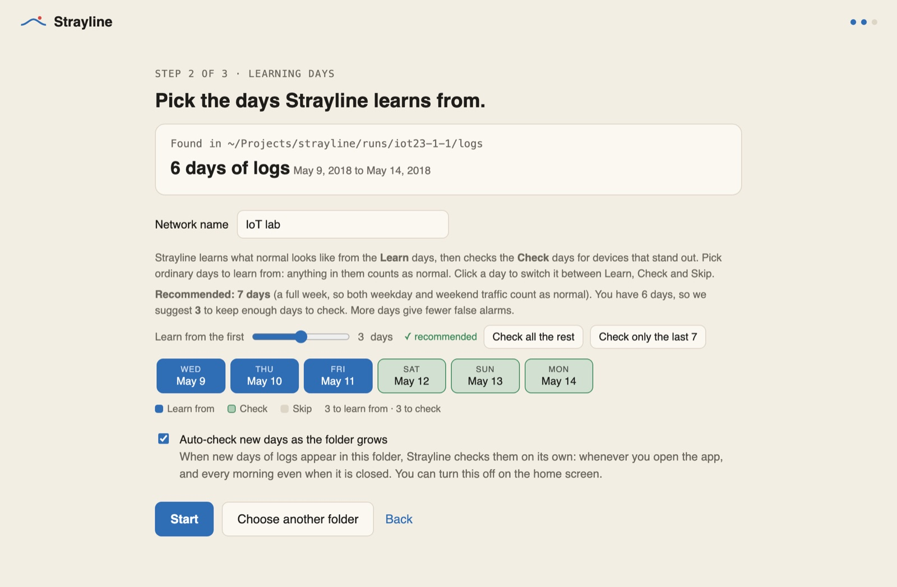
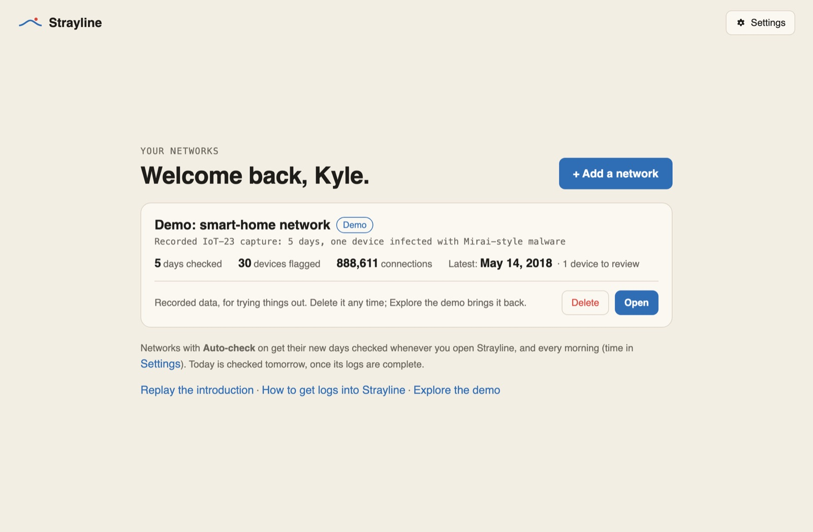
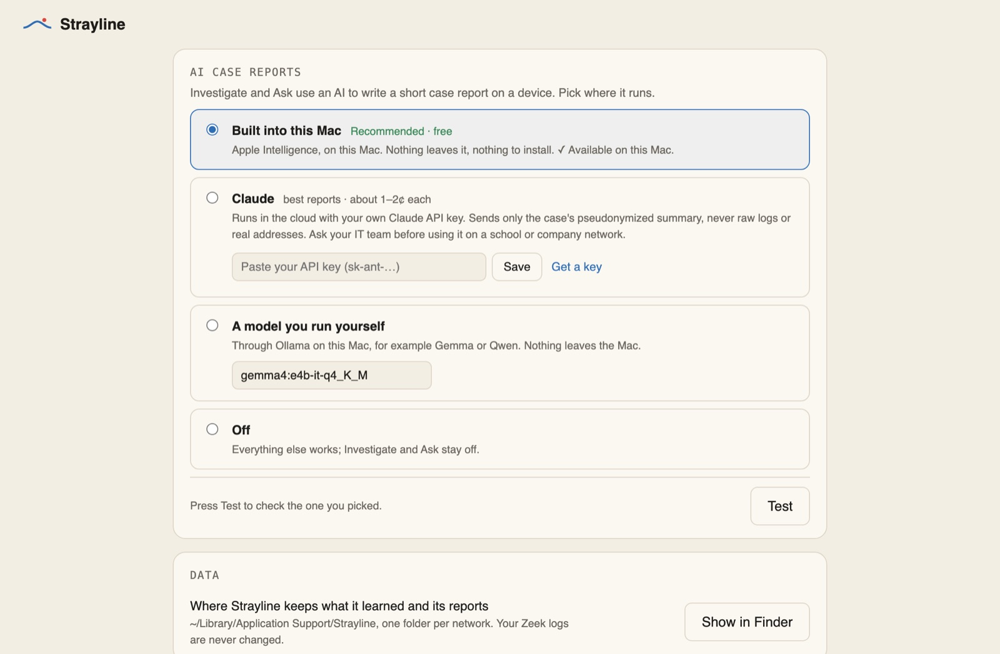

An AI security analyst for teams that can't afford one. Strayline reads the network logs you already keep, finds the device that's acting wrong, investigates it, and lets IT cut it off in one click. All on your own machine.
Built for schools and mid-sized companies. Your data never leaves the building.
01 · The problem
The attack that hurts most is the one nobody has seen before.
Most AI security tools only recognize attacks they were trained on. Known attacks get stopped at the gate. New ones walk straight through.
known attack, caught
never-seen attack, missed
02 · Two models, one line
One model learns the attacks we know. The other learns only what normal looks like.
The classifier catches known families. Anomaly detectors learn what normal looks like on your network, from your own logs, and flag anything that strays from it, whether or not it has a name.
03 · The flood
0
detector alerts from 6,551,388 connections.
One full day on a network Strayline was never trained on, at a 2% false-alarm budget. Still far more than any analyst can read.
04 · Structure first
1,251
incidents.
Plain code groups alerts per source host and time. No AI yet, just structure. Each cluster on screen is one real incident from that day.
05 · Rank, then let agents read
193 / 3
escalated, with the real intrusion at top priority.
A ranking step keeps a short list of 75 incidents: the 50 largest and 25 quiet ones. An AI read them and escalated 19; all 3 top-priority escalations were the real intrusion, a compromised machine sweeping the network.
On screen: every incident on the short list, plus a sample of the 1,176 held back. Hosts were pseudonymized.
The product
Every morning: a short list, a case report, and an off switch.
Strayline is an app that turns a day of your network's connection logs into the few devices worth a look. Below is its console, live in your browser: five days of traffic from a smart-home network with one device infected by Mirai-style malware.
Try it: the tour walks you through every feature (hit Next, or Skip to explore on your own). Or open the top case, read its AI case report, then try Quarantine. Pick another day on the left, or label a case. It's the real console running on IoT-23 scenario 1-1; the case reports are the ones the AI wrote on a laptop, and nothing you click is saved. The same demo comes pre-installed in every version of Strayline.
1 · Find
Detectors learn what normal looks like on your network from its first days of logs, then flag what strays from it. Alerts are grouped per device and ranked, so the list stays short.
2 · Investigate
One click on any case and an AI works it: it pulls the device's other incidents, its history, and everything it did that day compared with its own normal and the rest of the network. Then it writes a plain-English report with a verdict and a next step.
3 · Contain
If the evidence is strong, it recommends quarantine. One click records the decision and gives IT the exact firewall rule to cut the device off, and one more undoes it.
4 · Learn
IT marks each case real threat, unusual but fine or false alarm. Cleared devices stop being flagged; confirmed threats stay out of tomorrow's idea of normal.
Guardrail: the AI writes the report, but it can't recommend cutting a device off unless the computed evidence includes at least one strong warning sign. In testing it recommended quarantine for every real attacker and for none of the harmless devices.
Get Strayline
One download. Point it at your logs. It keeps watch.
Run Strayline where your logs already are: on a Mac, on the Linux server next to Zeek, or on a Windows PC that reads the sensor's logs. The detector, the console and the AI come in the box. No account, and your network data never leaves your machine unless you choose a cloud AI.

Guided setup. Choose the folder where your network's Zeek logs land; Strayline finds them even a few folders down. It recommends how many ordinary days to learn your normal from, and you can mark any day to learn from, check or skip.

Keeps watch on its own. Each network gets a card. As new days of logs arrive, Strayline checks them when you open the app and every morning even when it's closed, and the Dock shows how many devices still need a look. A demo network comes pre-installed, with a guided tour, before you add your own.

Your choice of AI. Case reports are written by the AI built into newer Macs (Apple Intelligence: free, nothing leaves the Mac), by Claude with your own API key (about 1–2¢ a report, sending only a pseudonymized case summary), or by a model you run yourself.
MacOne app for Apple Silicon Macs (macOS 26), with guided setup, the built-in AI option and a Dock badge.
LinuxOne install command or Docker Compose on Ubuntu, Debian or RHEL, x86 or ARM. Runs as a service next to Zeek, checks each morning, console behind a login.
WindowsIn testing: an installer for Windows 10/11 and Server that reads Zeek logs from a share on your sensor. Console in your browser, daily check in Task Scheduler.
Private beta: request access
Strayline isn't on public download yet. Tell us about you and the network you'd use it on; approved testers get a download link and a personal access code by email.
Mac: Apple Silicon, macOS 26; the built-in AI option needs Apple Intelligence turned on. Linux: Ubuntu 22.04/24.04, Debian 12/13, RHEL/Rocky 9 or Docker; 8 GB RAM. Windows: 10/11 or Server 2019/2022, x64, in testing. Every version can use a local model (Ollama) or Claude with your own key for case reports.
Tested on real malware
13 real infections it had never seen. The infected device was #1 every day.
IoT-23 is a public set of real network logs from smart devices infected with real malware (Mirai, Okiru, Torii and others), recorded by Stratosphere Lab in Prague. Each capture went to Strayline as a brand-new network, with no labels and no tuning.
20 / 20days the infected device was the #1 source on the daily list, across 13 captures, out of up to ~2,500 alerting sources a day
100%of attack traffic caught at 3.3% false alarms when the device was infected after setup (10.4M connections)
6 of 6right calls by the AI investigator: quarantine on all 4 attack incidents, keep watching on both harmless devices
~6 sper investigation, on a laptop, with nothing sent outside
The 6 cases: three incidents from a port scanner on a 2018 test network, the IoT-23 infected device, and two harmless devices. Full write-up of every capture, including the misses, is available on request.
Blind test on a live network
Planted attacks it couldn't see coming. All caught.
For four days Strayline watched live traffic on a home network, about 240,000 connections. Three harmless stand-ins for real attacks ran at random times from a sealed schedule: a command-and-control beacon, an internal port sweep and a 400 MB data upload. We also ran an imitation of an AI-driven intrusion: targeted probing, bursts with pauses, small staged uploads.
3 / 3planted attacks caught, each in the top 3 of that day's list
#1rank for the AI-agent-style intrusion
240klive connections, learned from one to two days of normal traffic
Nextfewer false alarms: a quiet day still produced dozens of cases on one busy laptop
Why it's cheap to run
Security-team results without the security-team bill.
Most organizations this size can't hire a security analyst, and the big network-monitoring products are priced for large enterprises. Strayline is built to be affordable from the ground up.
$0new hardware. One app (Mac, Linux or Windows) that reads the connection logs your network already produces (Zeek).
~3 minto process a full day of a 6.5-million-connection network, on an ordinary laptop
$0per-use AI fees with the AI built into your Mac. Claude is optional, about 1–2¢ per case report.
~20cases a day for a person to read instead of 130,000 alerts, so your existing IT staff can keep up
How it's sold
A simple monthly subscription per site, priced for schools and mid-sized businesses: a fraction of one security hire.
Through the managed IT companies that already run IT for hundreds of small businesses and schools, so one partner reaches many customers.
Starting with free pilots in shadow mode: Strayline only reads logs and never touches live traffic until you say so.
How it works
A cheap detector on every connection. AI only where a person will look.
Logs
The connection logs many networks already keep (Zeek): timing, ports, byte and packet counts, TCP flags. No payloads, no packet capture.
Detector
A classifier for known attacks, plus anomaly detectors that learn your network's normal from its first days of logs. Alert lines reset daily to hold your false-alarm budget.
Incidents
Alerts are grouped per host. Two queues pick what's worth a look: the largest incidents, plus small ones that only the anomaly detectors catch.
Investigate
Strayline gathers the evidence on a device and an AI writes the case report: verdict, what happened, what to do next. By default it's the AI built into the Mac, so nothing leaves it.
Contain
One-click quarantine with the firewall rule to apply, and an analyst's label on every case that teaches Strayline your network.
What this is, honestly
Most results come from public datasets: two lab testbeds (CIC-IDS2017 and CSE-CIC-IDS2018), real malware captures (IoT-23) and real Zeek logs (UWF-ZeekData24). The one live test so far is a blind planted-attack test on a home network (all attacks caught, false alarms still too high); a business or school pilot is next.
The Linux version is new: tested on Ubuntu and in Docker, unsigned for now. The Windows installer builds and passes its tests but has not yet been tried on a clean Windows machine.
If a device is already infected during setup, Strayline can learn the infection as normal. It now warns when one device dominates setup traffic and stops flagged devices from shaping tomorrow's normal, which brought the infected device back to #1, but setup on a known-quiet week is still best.
Quiet intrusions are caught poorly: about 20% of infiltration connections on the new network.
The lab classifier alone does not transfer to new networks. Strayline depends on learning each network's own normal traffic.
Team
One founder, so far.
Kyle Robin
Founder · research and engineering
Sophomore at Bates College studying Digital and Computational Studies, and lead of AI research in Professor Jason Castro's lab. Designed and built Strayline's detectors, the AI investigator and the Mac app.
Looking for 2–3 pilot sites: a school, a mid-sized company, or a managed IT provider willing to try it on one client. It runs on a Mac, a Linux server or Windows: it reads only connection logs, never touches live traffic, and sends nothing outside your network unless you choose a cloud AI. If that's you, or you know who it is, I'd like to talk.